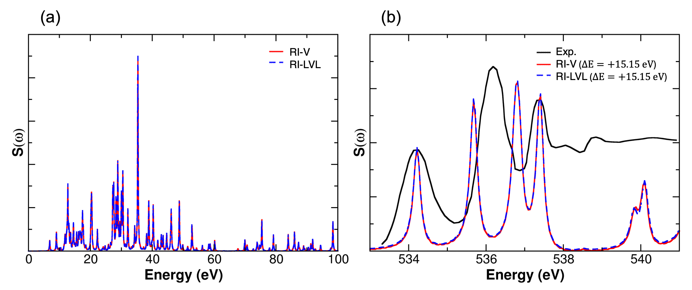
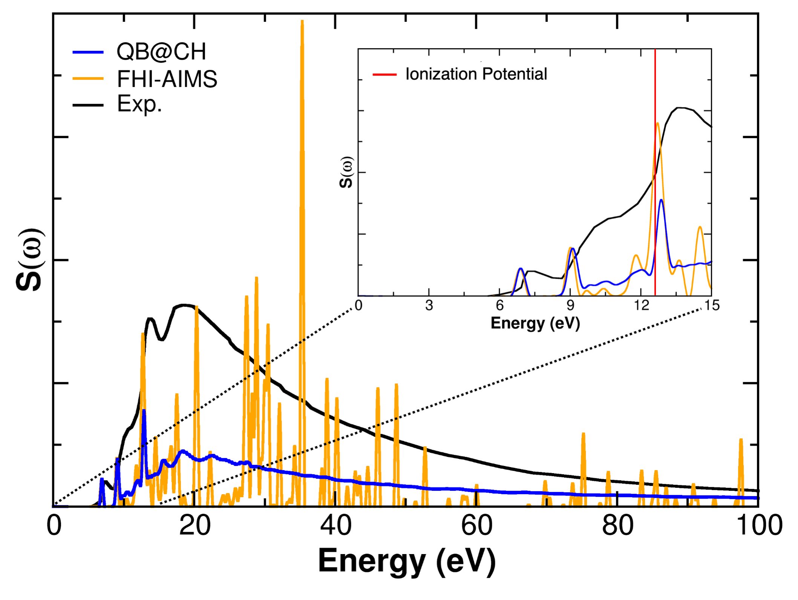
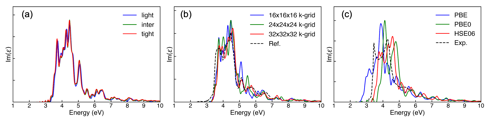
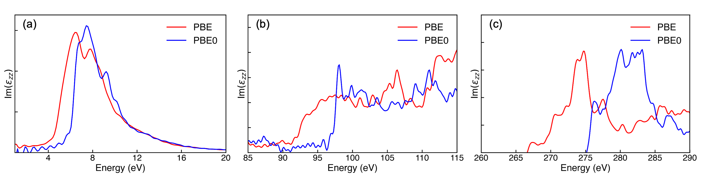

全电子实时 TDDFT：把高效精确交换接入分子与周期材料的电子传播
论文原文 ↗论文：All-electron RT-TDDFT with Exact Exchange based on Numeric Atom-centered Orbitals for Condensed Matter，Jianhang Xu、Christopher Shepard、Yosuke Kanai，2026。arXiv｜
实时电子动力学需要更丰富的交换关联处理
光脉冲进入分子或固体后，电子会在极短时间内重新分布。实时含时密度泛函理论 RT-TDDFT 显式追踪电子态随时间变化，可以计算光谱，也为电荷转移、热载流子等非平衡过程提供第一性原理工具。
这些过程对电子相互作用的近似很敏感。杂化交换关联泛函加入一定比例的 Hartree–Fock 型精确交换，有助于改善电荷局域化与长程响应。它的代价也高：交换作用是非局域的，而实时传播中电子态不断变化，每个时间步都要重建交换矩阵，凝聚态计算因此长期主要采用较便宜的半局域泛函。
本文在 FHI-aims 的数值原子中心轨道框架中，把高效的基态恒等分解算法扩展到复数、含时哈密顿量，建立全电子杂化泛函实时传播路线。作者依次通过水分子、晶体硅和碳化硅展示价电子与核电子响应。
从晶胞与电子轨道走到吸收光谱
以晶体硅为例，输入为两原子周期晶胞、晶格、所选泛函、轨道基组和 k 点采样。数值原子中心轨道 NAO 是放置在各原子附近的一组数值基函数，电子态由这些函数的线性组合表示；k 点则采样周期电子在不同晶体动量下的状态。
先求基态，再施加一次弱的短促电场扰动。程序逐时间步传播轨道系数，根据新的电子密度更新 Hartree 势和交换关联作用，用预测—校正迭代确定时间步中的哈密顿量。记录宏观电流并傅立叶变换，即可得到电导与介电响应，介电函数虚部随光子能量的变化反映吸收。对孤立分子，记录偶极矩得到极化率和偶极强度谱。
这条链中，精确交换涉及四个轨道基函数的双电子积分。恒等分解 RI，也称密度拟合，用辅助基函数表示两个轨道的乘积，将昂贵四中心积分改写成更易计算的低阶量。常规 RI-V 的周期交换同时涉及两组 k 点；局域 RI-LVL 则将一对轨道乘积的拟合限制在相应两个原子的辅助函数上，从而拆分 k 点依赖，并利用轨道局域性、密度矩阵衰减和稀疏筛选降低开销。各局部拟合仍通过库仑矩阵连接。
实时传播带来新的实现要求：轨道具有相位，密度矩阵成为复数并随时间更新。作者分别处理实部的对称分量和虚部的反对称分量，将其接到已有基态算法的中间矩阵、稀疏处理与并行分布上。于是，原本用于静态电子结构的高效交换框架可以在每个时间步重新生成当前电子态所需的交换作用。
水分子：局域 RI 与已有方法得到一致响应
作者首先固定水分子与 B3LYP 杂化泛函，比较新 RI-LVL 实现和已有 RI-V。施加弱扰动后实时传播，分别观察价电子区和氧 K 边。K 边对应从氧 1s 核轨道出发的激发，检验的是更高能量的全电子响应。
两种实现的曲线在价电子与 K 边都重合，说明局域 RI 框架成功延伸到了复数实时传播。

原图 Fig.1。a 为价电子强度谱，b 为氧 K 边；RI-LVL 与 RI-V 曲线重合。K 边计算谱按实验首峰作整体能量对齐。
作者还与平面波赝势程序 QB@CH 比较同一 B3LYP 水分子光谱。在约 12.6 eV 电离阈值以下，两种轨道表示给出接近的束缚激发峰位与相对强度；宽能区图进一步展示不同基组对高能响应的描述。

原图 Fig.2。主图为宽能区，插图放大低能束缚激发；红线标出电离阈值。高能区局域轨道呈现较离散的峰，平面波响应更平滑，低能区两者接近。
晶体硅：杂化泛函重现凝聚态光谱
周期体系的测试先比较基组和 k 点。采用 HSE06 时，light、intermediate 和 tight 三套 NAO 设置产生接近的光谱；加密 k 点后主要结构保持一致，并与已有实时 TDDFT 结果对应。
随后在相同基组与 32×32×32 k 点下比较 PBE、PBE0 和 HSE06。PBE 是半局域泛函，PBE0 使用全局混合的精确交换，HSE06 则按作用距离分离并屏蔽长程交换。HSE06 得到约 3.7 与 4.4 eV 的主要峰，整体谱形接近实验，能量差约为 0.2 eV，也与平面波赝势实现的表现一致。

原图 Fig.3。a 比较基组，b 比较 k 点及文献参考，c 比较 PBE、PBE0、HSE06 与实验。前两组建立数值收敛，第三组展示交换关联处理对吸收峰的影响。
这一比较连接了方法开发的出发点：高效交换计算让周期实时传播可以使用更丰富的泛函，而光谱中的主要峰提供了直接评价这些选择的物理量。
碳化硅：同一全电子实现覆盖价态与两种核边
作者进一步计算四原子晶胞的 2H-SiC，沿 z 方向施加扰动，获得价电子响应、硅 L 边和碳 K 边的 X 射线吸收谱。全电子 NAO 表示同时保留核态与价态，因而可以在同一个方法框架中进入这些不同能量区间。
从 PBE 换为 PBE0，价电子第一峰由约 6.4 移至 7.4 eV；硅 L 边主要特征起点蓝移约 4.5 eV，碳 K 边蓝移约 8.5 eV。不同激发对交换处理的响应各异，展示了杂化泛函在价态和核态谱学中的具体作用。

原图 Fig.4。三个面板分别为价电子区、硅 L 边和碳 K 边，均显示介电函数 zz 分量；红线为 PBE，蓝线为 PBE0。
本文把高效基态 RI 交换框架扩展到了复数、含时电子态：水分子建立与已有 RI 的一致性，硅连接到既有实时计算与实验光谱，SiC 展示全电子核边覆盖。由此，数值原子轨道为分子和凝聚态材料提供了一条统一的杂化泛函实时 TDDFT 路线，使更精细的电子相互作用处理进入实际电子动力学计算。
原始摘要完整中文翻译
实时含时密度泛函理论（RT-TDDFT）已成为研究激发态与非平衡电子动力学的常用第一性原理方法。包含一定比例非局域精确交换的杂化交换关联（XC）泛函，对准确描述电荷转移和热载流子动力学等过程尤为重要。然而，杂化 XC 泛函所需精确交换带来的高计算成本，使凝聚态体系的 RT-TDDFT 模拟在很大程度上仍局限于半局域 XC 泛函。本文提出一种基于数值原子中心轨道的 RT-TDDFT 全电子精确交换实现，将一种高效的基态恒等分解（RI）框架扩展到实时传播所需的复数、含时哈密顿量。我们通过孤立水分子与已有 RI 方法比较，验证了这一实现，发现价电子激发和核电子 K 边激发均完全一致。我们还在晶体硅和碳化硅两个扩展周期体系上展示了该方法。对硅，HSE06 光谱重现了此前报道的实时 TDDFT 结果，与实验的差异约在 0.2 eV 内，与平面波赝势实现一致。对碳化硅，我们计算了价电子光谱以及硅 L 边、碳 K 边的 X 射线吸收光谱。这些结果为分子和凝聚态体系采用杂化 XC 泛函的 RT-TDDFT，建立了一条高效的全电子计算路线。